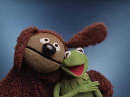

Created by Jim Henson in 1955,The Muppets are an American ensemble cast of puppet characters known for an absurdist, burlesque, and self-referential style of variety-sketch comedy. Kermit is known as the leader. Kermit possesses a natural sense of leadership within the Muppets, explaining that "he has all these zany characters and a world around him and he tries to be the center and hold everything together...sometimes he gets too much and blows his top, but essentially he kind of goes with the flow."
| Miss Piggy | A temperamental diva pig who is the Muppets' break-out and "authentic superstar". | |
| Fozzie Bear | An insecure, stand-up comic bear. | |
| Gonzo | |
An eccentric, hooked-nosed alien creature and stunt performance enthusiast. |
| Rowlf the Dog |  | An easygoing pianist dog wonderfully down-to-earth, with a dry, self-deprecating sense of humor. |
| Scooter | The loyal stage manager and gofer of the Muppet Theatre. | |
| Animal | The wild, frenzied monster drummer for Dr. Teeth and the Electric Mayhem. | |
| Pepe the King Prawn | A scheming and sassy Latino king prawn. | |
| Rizzo the Rat | A sly and witty brown rat from the inner city. |